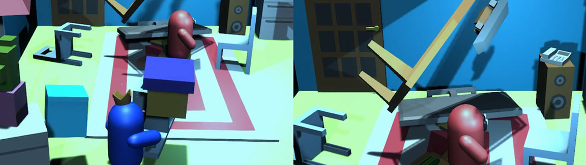
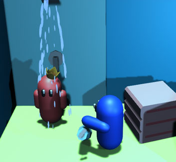
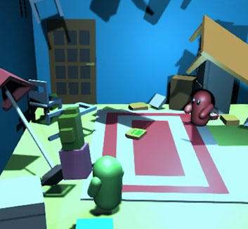
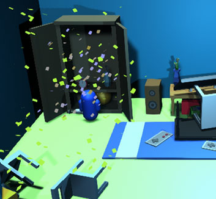

The player can pick up, hold and throw any of the items in the room. I designed the controls around this mechanic so the user can pick up and find items easier in this search and find type of game.
A strategy the player could use is they can pick up more general items to hide other specfic items. So they can find that item again later in the round.
Found Guys
Play Now! Click Me. 
Found Guys VS won 3rd place in Games Innovation Challenge! This competition was hosted by NSE and sponsored by Barclays.
Check out all of the winners: Click Me
Found Guys is a game where you find items in a room! Inspired by the old TV game show called Finders Keepers. The player will have to find various items around a small room in under 30 seconds.
The latest version of Found Guys which is called Found Guys VS has a competitive multiplayer mode. Originaly made for Global Game Jam 2021, the game has been expanded into Found Guys VS which adds multiplayer.
Found Guys VS can be played with up to 4 players. Go against other players to be the best at finding objects in a variety of rooms.
I desinged this game to be based in your ussal rooms in find around anyone ones house. Such as a bedroom, kitchen and a bathroom.


